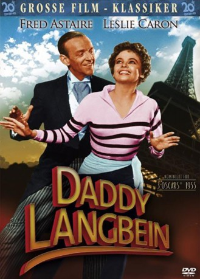
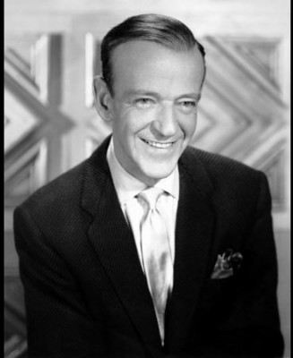
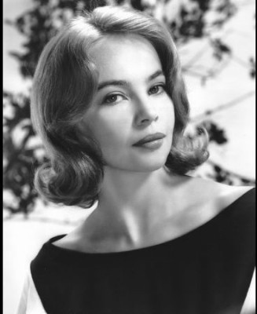
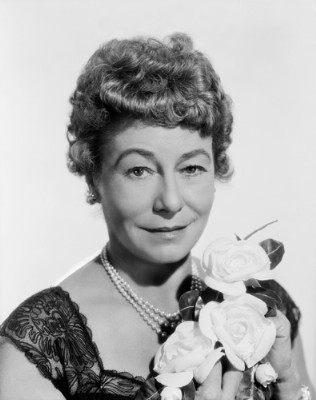
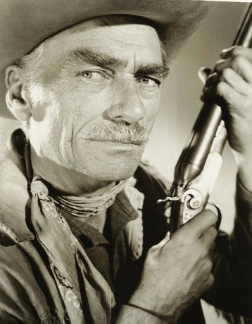
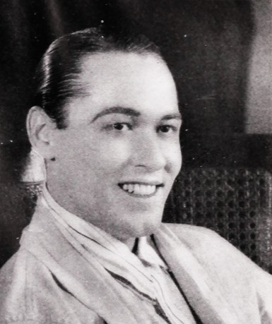
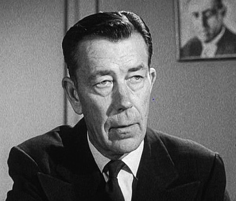
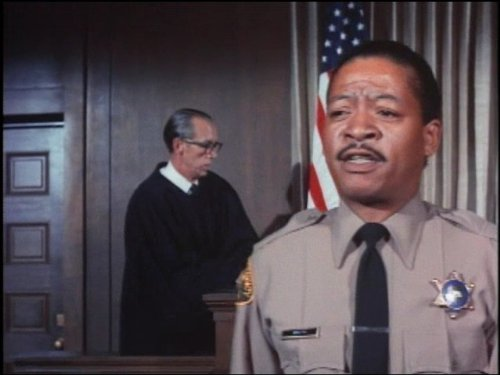
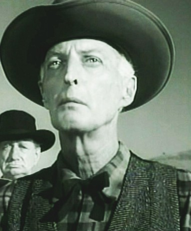

#6584 Daddy Langbein
Alternativ: Daddy Long Legs
Auszeichnungen: für 3 Oscars nominiert
 
 IMDB-Wertung: 6.7 / 10
IMDB-Wertung: 6.7 / 10  Metascore: 0
Metascore: 0 
Auf einer Reise nach Frankreich, erblickt der lebensfrohe Millionär Jervis Pendelton ein 18-jähirges Mädchen, welches in einem Waisenhaus lebt. Auf den ersten Blick ist er von der Schönheit der jungen Frau verzaubert, jedoch sind ihm die gesellschaftlichen Fesseln, die sich aufgrund des Altersunterschiedes auftun, durchaus bewusst. Doch trotzdem beschließt er der jungen Julie als anonymer Gönner den College-Aufenthalt zu finanzieren, ohne dass sie weiß, wer Jervis wirklich ist. Aus Dank schreibt sie ihm kontinuierlich Briefe, die ihr geheimnisvoller Financier aber nicht lesen will. Ungeöffnet sammelt er sie jedoch. Nach drei Jahren des Wartens, beschließt er endlich aus der Anonymit��t hervorzutreten und sich vorzustellen, doch ergeben sich dabei ungeahnte Probleme…
Jahr: 1955
Dauer: 126 Minuten
FSK: 6
Land: USA Studio: 20th Century FoxTonspuren:
Untertitel: Deutsch,
Auflösung: 1080p (1920x752) Größe: 10240 MB
Genre: Liebe, Musical
Regisseur: Jean Negulesco
Drehbuch: Phoebe Ephron
Soundtrack:
Darsteller:
-  Fred Astaire als Jervis Pendleton III
-  Leslie Caron als Julie Andre
- Terry Moore als Linda Pendleton
-  Thelma Ritter als Alicia Pritchard
- Fred Clark als Griggs
- Charlotte Austin als Sally McBride
- Larry Keating als Ambassador Alexander Williamson
- Kathryn Givney als Gertrude Pendleton
- Ray Anthony als Himself
-  Robert Adler als Deliveryman , uncredited
- Gertrude Astor als Art Gallery Patron , uncredited
- Barrie Chase als Blonde dancer, in International Playboy , uncredited
- Ann Codee als Madame Sevanne , uncredited
-  Sayre Dearing als Art Gallery Patron , uncredited
- Steven Geray als Emile , uncredited
- Chester Hayes als Graduation Extra , uncredited
- Charles Anthony Hughes als Hotel Manager , uncredited
- J. Anthony Hughes als Deliveryman , uncredited
- Diane Jergens als College Girl , uncredited
- Joseph Kearns als Guide , uncredited
-  Kenner G. Kemp als Airport Extra , uncredited
- Larry Kent als Butler , uncredited
- Lisa Montell als College Girl , uncredited
- Liliane Montevecchi als College Girl , uncredited
- Forbes Murray als Art Gallery Patron , uncredited
 William H. O'Brien als Hotel Waiter , uncredited
William H. O'Brien als Hotel Waiter , uncredited- Damian O'Flynn als Larry Hamilton , uncredited
- Leslie Parrish als College Girl , uncredited
- Evelyn Rudie als Codene, Orphan Girl , uncredited
- Sara Shane als Pat , uncredited
- Pat Sheehan als College Girl , uncredited
-  Olan Soule als Asst. Hotel Manager , uncredited
-  Bert Stevens als Graduation Extra , uncredited
- Charles Tannen als Man in White Suit, Ballet Nightmare Sequence , uncredited
- Kelly Brown als Jimmy McBride
- Paul Bradley als Second Jeweler , uncredited
- Tim Cagney als Orphan , uncredited
- Kathryn Card als Miss Carrington , uncredited
- John Carlyle als Student in 'Sluefoot' Dance Sequence , uncredited
- Janice Carroll als Athetic Girl Dancer , uncredited
- James Conaty als Art Gallery Patron , uncredited
- Lillian Culver als Inquisitive Woman , uncredited
- Guy Des Rochers als French Lieutenant , uncredited
- Shirley Doble als College Girl , uncredited
- Ralph Dumke als Mr. Bronson , uncredited
- George Dunn als Chauffeur , uncredited
- Pat Ferguson als Elevator Boy , uncredited
- Kelly Gordon als Student in 'Sluefoot' Dance Sequence , uncredited
- Ivis Goulding als Dignified Woman , uncredited
- Bill Hines als Army Sergeant , uncredited
Datei: X:\1950-1959\Daddy Langbein (1955, FSK6, 1920x752).mkv seit 18.07.2017
Festplatte: HD 1900-1970
 Es gibt insgesamt 141 Filme in der Gruppe '1950-1959'
Es gibt insgesamt 141 Filme in der Gruppe '1950-1959'